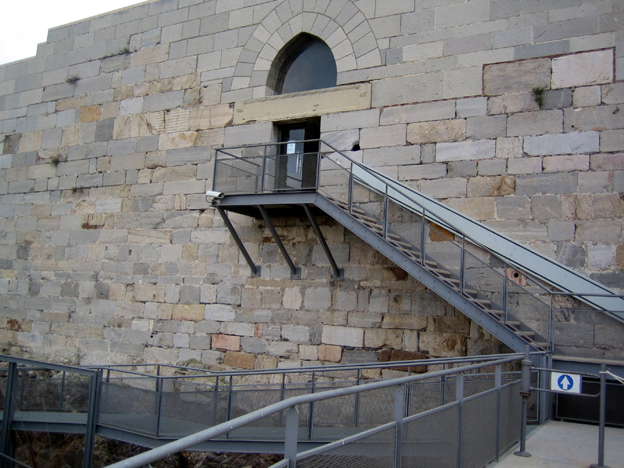

CityLoop Quest Carthagène


Carthagène aime les histoires qui relient invention, guerre, mer et vie quotidienne. Le sous-marin Peral en est le meilleur exemple : un prototype électrique de 1888, conçu par un enfant de la ville, devenu un symbole de génie incompris. Peu d’objets résument aussi bien la fierté navale locale.

Autre anecdote forte : le théâtre romain est resté longtemps invisible sous la ville. Sa redécouverte récente a changé l’image de Carthagène, prouvant qu’un monument majeur pouvait dormir sous un quartier ordinaire. Cette idée fascine parce qu’elle laisse imaginer d’autres fragments encore cachés.
Le café asiático raconte une histoire plus douce, mais tout aussi locale. Avec son mélange de café, lait condensé, brandy et Licor 43, il appartient à une culture de comptoir, de port et de conversation. Le verre lui-même fait partie de l’identité de la boisson.

Enfin, Carthagène possède cette particularité rare : elle peut faire passer un visiteur d’une muraille punique à un refuge de la guerre civile en moins d’une heure. Ce raccourci temporel n’est pas un gadget ; c’est la signature profonde d’une ville où les siècles restent très proches les uns des autres.